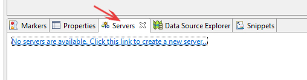

1.5 Installation of Apache Tomcat in Eclipse Development Environment
Eclipse is a very powerful development environment for Java. For Web Development project you need Web Server. Apache Tomcat is the best production ready web container.
How to Install Eclipse for Java
These installation steps are written for windows user.
Step-1
Install JDK. To use Eclipse for Java programming, you need to first install Java Development Kit (JDK). If you have not installed JDK in your system Read "How to Install JDK (on Windows)".
Step-2
Download Eclipse from http://www.eclipse.org/downloads. For web development, choose "Eclipse IDE for Java EE Developers" (32-bit or 64-bit) (e.g., "eclipse-jee-mars-R-win32-x86_64.zip").
Step-3
Unzip the downloaded file into a directory of your choice.
There is no need to run any installer. Moreover, you can simply delete the entire Eclipse directory when it is no longer needed (without running any un-installer).
Setup and Install Apache Tomcat Server in Eclipse Development Environment
By default when you download Eclipse IDE, it doesn’t come with Tomcat install with it. Follow all detailed steps to configure Apache Tomcat successfully in Eclipse environment.
Step-1
Download Apache Tomcat from this link http://tomcat.apache.org/
click Download -> Tomcat 8.0
Choose Binary Distributions Core: 32-bit Windows zip / 64-bit Windows zip
Step-2
Extract it to Document folder.
Step-3
- Open Eclipse Environment
- Click on Servers Tab
- Click on No servers are available. Click this link to create a new server...

- Click Tomcat v8.0 Server and Next
Step-4
Select Apache installation Directory and click Finish.
Step-5
You should see Tomcat v8.0 Server at localhost [Stopped, Republish] under Servers tab.
Step-6
Now select the Server and click Start.
Now it should be up and running on port 8080. In next section we will create our first servlet program in eclipse..